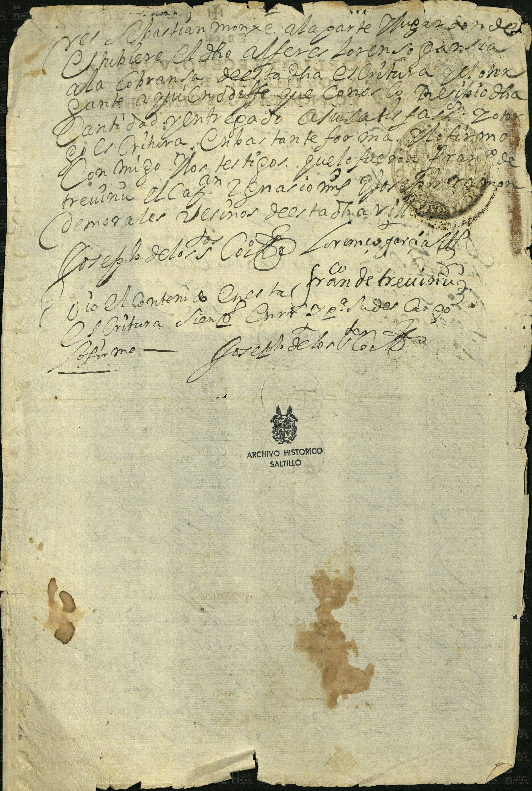

Lorenzo García · Sebastián Monje

| Fondo | Presidencia Municipal (PM) |
| Firma AMS | AMS, PM, c 2, e 4, 2 ff |
| Fecha | 29 de febrero de 1668 (según la ficha del catálogo) |
| Descripción de la ficha del catálogo (tal cual) | Lorenzo García hipoteca 15 mulas a Sebastián Monje para garantizar el pago de los 207 pesos de oro común que recibió en préstamo. |
| Id de ficha en el portal | 46119 |
| Personas indexadas en la ficha | Lorenzo García, Sebastián Monje |
Lectura paleográfica parcial. Lo que no se lee con certeza está marcado [ilegible] o [duda: …] y no se toma como dato.
Imagen 1: final de una escritura (lectura parcial).
«… Sebastián Monje, a la parte que lugar [duda: hubiere] … el dicho alférez Lorenzo García a la cobranza de esta dicha escritura y de otra [duda: …] a quien dixo que conoce … recibió dicha cantidad y entregado a su satisfacción … de la escritura. Y así lo firmó conmigo, [duda: dos] testigos, que lo fueron Francisco de Treviño, el Capitán Ignacio [ilegible] y Joseph [duda: Ramón] de Morales, vecinos de esta dicha villa.»
Firmas: [duda: «Joseph de los Co…»]; «Lorenzo García» (rúbrica); [duda: «Franco de Treviño»].
«Doy fe del contenido en esta escritura, siendo [ilegible] … a mi cargo … Doy fe.» y rúbrica [duda: «Joseph de los Co…»].
Imagen y ficha: Archivo Municipal de Saltillo, Sefarad MX. Fuente: Archivo Municipal de Saltillo, portal del archivo digital (Presidencia Municipal). Verificado y avalado por Sefarad MX · genealogiasefardi.site.